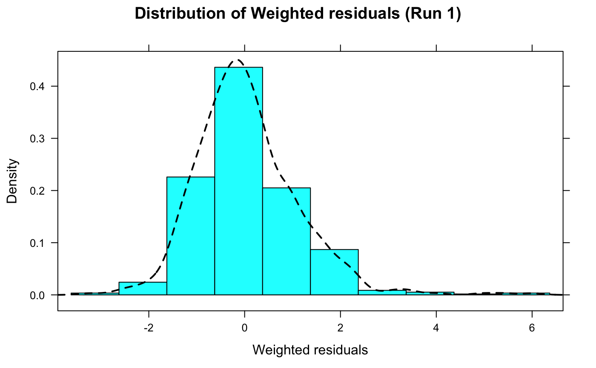

wres.dist.hist.RdThis is a histogram of the distribution of weighted residuals (WRES) in the
dataset, a specific function in Xpose 4. It is a wrapper encapsulating
arguments to the xpose.plot.histogram function.
wres.dist.hist(object, ...)
| object | An xpose.data object. |
|---|---|
| ... | Other arguments passed to |
Returns a histogram of weighted residuals (WRES).
Displays a histogram of the weighted residuals (WRES).
xpose.plot.histogram,
xpose.panel.histogram, histogram,
xpose.prefs-class, xpose.data-class
Other specific functions:
absval.cwres.vs.cov.bw(),
absval.cwres.vs.pred.by.cov(),
absval.cwres.vs.pred(),
absval.iwres.cwres.vs.ipred.pred(),
absval.iwres.vs.cov.bw(),
absval.iwres.vs.idv(),
absval.iwres.vs.ipred.by.cov(),
absval.iwres.vs.ipred(),
absval.iwres.vs.pred(),
absval.wres.vs.cov.bw(),
absval.wres.vs.idv(),
absval.wres.vs.pred.by.cov(),
absval.wres.vs.pred(),
absval_delta_vs_cov_model_comp,
addit.gof(),
autocorr.cwres(),
autocorr.iwres(),
autocorr.wres(),
basic.gof(),
basic.model.comp(),
cat.dv.vs.idv.sb(),
cat.pc(),
cov.splom(),
cwres.dist.hist(),
cwres.dist.qq(),
cwres.vs.cov(),
cwres.vs.idv.bw(),
cwres.vs.idv(),
cwres.vs.pred.bw(),
cwres.vs.pred(),
cwres_wres_vs_x,
dOFV.vs.cov(),
dOFV.vs.id(),
dOFV1.vs.dOFV2(),
data.checkout(),
dv.preds.vs.idv(),
dv.vs.idv(),
dv.vs.ipred.by.cov(),
dv.vs.ipred.by.idv(),
dv.vs.ipred(),
dv.vs.pred.by.cov(),
dv.vs.pred.by.idv(),
dv.vs.pred.ipred(),
dv.vs.pred(),
gof(),
ind.plots.cwres.hist(),
ind.plots.cwres.qq(),
ind.plots(),
ipred.vs.idv(),
iwres.dist.hist(),
iwres.dist.qq(),
iwres.vs.idv(),
kaplan.plot(),
par_cov_hist,
par_cov_qq,
parm.vs.cov(),
parm.vs.parm(),
pred.vs.idv(),
ranpar.vs.cov(),
runsum(),
wres.dist.qq(),
wres.vs.idv.bw(),
wres.vs.idv(),
wres.vs.pred.bw(),
wres.vs.pred(),
xpose.VPC.both(),
xpose.VPC.categorical(),
xpose.VPC(),
xpose4-package
## Here we load the example xpose database xpdb <- simpraz.xpdb wres.dist.hist(xpdb)